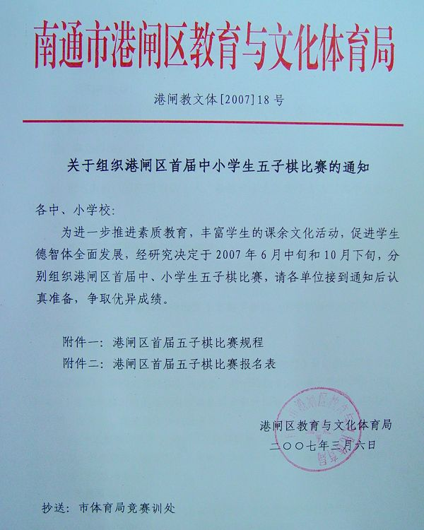

关于组织港闸区首届中小学生五子棋比赛的通知
#1 关于组织港闸区首届中小学生五子棋比赛的通知 作者：有志青年 发表时间：2007-2-26 21:02:48

关于组织港闸区首届中小学生五子棋比赛的通知
各中、小学校：
为进一步推进素质教育、丰富学生的课余文化活动，促进学生德智体全面发展，经研究决定于2007年6月中旬和10月下旬，组织港闸区首届中小学生五子棋比赛，请各单位接到通知后认真准备，争取优异成绩。
附件一：港闸区首届五子棋比赛规程
附件二：港闸区首届五子棋比赛报名表
港闸区教育与文化体育局
二○○七年三月二日
附件一：
港闸区首届中小学生五子棋比赛规程
/*760*90，创建于2012-2-9*/ var cpro_id = 'u761865';
#2 Re:南通五子棋将于2007年上半年开展学生五子棋比赛 作者：什锦菜 发表时间：2007-2-27 11:18:18
支持#3 Re:南通五子棋将于2007年上半年开展学生五子棋比赛 作者：yuelee 发表时间：2007-2-28 14:21:30
支持！
建议交叉循环赛的时候考虑双方执黑执白的公平性，而不是每次都随机。
可以采取这样的方式：比较双方曾经在前面比赛中的执黑局数，由曾执黑少者在本轮比赛中执黑。
嘎嘎~~~~~~~~
#4 Re:关于组织港闸区首届中小学生五子棋比赛的通知 作者：longfx 发表时间：2007-3-2 0:37:17
〔7〕对局中如黑方出现禁手，白方应立即指出禁手点，黑方即负。如白方在黑方出现禁手后，又下一步白子，黑棋禁手则不成立了。
我记得实战的话，三三，四四以及三三四和三四四都是应立即指出。长连禁是可以随时指出的。
#5 Re:Re:关于组织港闸区首届中小学生五子棋比赛的通知 作者：有志青年 发表时间：2007-3-2 9:13:22
引用：
原文由 longfx 发表于 2007-3-2 0:37:17 :〔7〕对局中如黑方出现禁手，白方应立即指出禁手点，黑方即负。如白方在黑方出现禁手后，又下一步白子，黑棋禁手则不成立了。
我记得实战的话，三三，四四以及三三四和三四四都是应立即指出。长连禁是可以随时指出的。
 多谢少少，和组委会商讨一下
多谢少少，和组委会商讨一下
#6 Re:关于组织港闸区首届中小学生五子棋比赛的通知 作者：二十七刀 发表时间：2007-3-20 16:04:47
老大好厉害,羡慕,支持,期待中.#7 Re:关于组织港闸区首届中小学生五子棋比赛的通知 作者：xg1101 发表时间：2007-3-28 0:21:16
很好，有利于五子棋在青少年推广。顶。